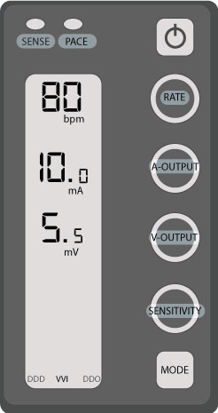
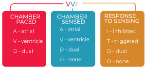

External Pacemakers

An external pacemaker is used to support patients with low cardiac output or certain arrhythmias such as heartblock or severe bradycardia which could result in hemodynamic compromise.
Mode controls which leads are paced & how, the pacer responds to native cardiac activity.
Rate controls how often the pacer will send an impulse. In the image to the left the rate is set at 80 bpm.
Output controls how much energy is delivered to each pacing lead. While threshold refers to how much energy is required to trigger depolarization, (QRS complex).
Sensitivity controls how much current has to be detected to identify depolarization.

| MODE | DESCRIPTION | PROs | CONs |
|---|---|---|---|
| VVI | Common mode used via transvenous pacer wire. | On demand V pacing; good for backup. | Loss of atrial kick. Difficult to assess ST segments with V pacing. |
| VOO | Can be used when sensing is unreliable. | Resistant to interference. | Loss of atrial kick & Rsk of R on T phenomenon. |
| DDD | Common mode for pacing via epicardial pacing wires. | Maintains atrial kick. | Risk of endless-loop tachycardia. |
| DOO | Can be used when sensing is unreliable. | Maintains atrial kick & resistant to interference. | Risk of R on T phenomenon. |
Resources,Temporary/External Cardiac Pacing, onepagericu.com by Nick Mark